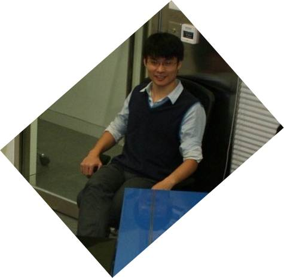

Cheng-Jun Wang
Cheng-Jun Wang
2015
[Feb 23] Chengjun and Lingfei released a Python package
scholarNetwork
which can help crawl and visualize the coauthor network of Google Scholar.
[Jan 16] Chengjun formally became an
asssistant research fellow
of the School of Journalism and Communication, Nanjing Univeristy
[Jan 16] The paper titled The Landscape of Information Diffusion on Sina Weibo has been accepted by the 65th Annual Conference of International Communication Association (ICA)
2014
[Nov 11]
Chengjun gets his Ph.D degree from City University of Hong Kong.
[Oct 21] Chengjun gave An Introduction of Computational Communication to the master students of new media in NJU
[Oct 3] Chengjun becomes a member of the scientific committee of Swarm Agents Club (集智科学委员会成员)
[Aug 26] Chengjun passed the oral defence for the Ph.D dissertation
[June 29] The
website of Computational Communication
is finally up and running
[April 10] Interns in Tencent, Shenzhen
[April 24]
Chengjun talks about web data analysis for the workshop of Web Mining for Communication Research
[Jan 16] Two papers have been accepted by the 64th Annual Conference of International Communication Association (ICA)
2013
[Nov 20]
Chengjun won First-place Prize at ASDSC2013
[Jul 11]
A New Book on Network Analysis Translated by Chengjun
[Jan 05]
Paper on Public Discussions of Occupy Wall Street Accepted by CBS
2012
[Nov 02]
Cheng-Jun Got Best Paper Award of the Student Symposium
[Jun 08]
Chengjun Gives a Talk about News Diffusion in ANU
2011
[Sep 24]
Chengjun presented his paper at 64th annual conference of WAPOR
[Nov 11]
Chengjun won Top 3 Conference Paper Award of 2nd Honours Symposium for Asian Ph.D Students in Communication Research, Singapore.
2010
[Jun 10] Chengjun got the Outstanding Paper Award of 11th China Communication conference
2009
[Nov 11]
Chengjun won P & G Award of China Market Research.
[Oct 10]
Chengjun won Outstanding Paper Award of People.com.
[Jun 20]
Chengjun won the Top Award of the Challenge Cup of Peking University.
2008
[Sep 1]
Chengjun entered Peking University as a master student.
[Jul 08]
Chengjun got his bachelor degree from Lanzhou Univeristy.